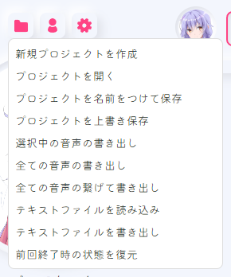
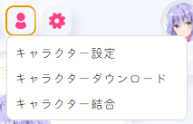

COEIROINK Text-to-Speech¶
1. Overview¶
COEIROINK is a Japanese-focused Text-to-Speech (TTS) software.
It can generate natural, dialogue-style speech and supports downloading and adding various character voices.
In VoiceScriptPlayer, it is mainly used for script narration and character voice synthesis.
2. Installation & Setup¶
-
Download COEIROINK
Download the latest version from the official website. -
CPU Version
- Works on all PCs
- Slower speed, but stable even without a GPU
-
GPU Version (with CUDA)
- Works in NVIDIA GPU environments
- 3–10x faster than the CPU version
- Requires CUDA (recommended: 11.8)
- Download CUDA here

- Prepare for Launch
- COEIROINK does not require installation.
- Simply extract the downloaded zip file to any location,
then runCOEIROINK2.exedirectly. -
No need to change paths or use administrator privileges.

-
First Launch & Terms of Use
- When you first start COEIROINK, you’ll see a Terms of Use (利用規約) screen.
- You must click “利用規約” to view the content, then click 「同意する (Agree)」 on the left to enable it.
- If you do not agree, the program will exit.
- Credit notation is mandatory when using COEIROINK (e.g.,
COEIROINK:VoiceName).

3. Configuration¶
Once COEIROINK is running, VoiceScriptPlayer will automatically connect to it.
Below is an overview of each menu at the top of the program.
📂 Project Menu¶

- 新規プロジェクトを作成 → Create New Project
- プロジェクトを開く → Open Existing Project
- プロジェクトを名前をつけて保存 → Save As
- プロジェクトを上書き保存 → Save (Overwrite)
- 選択中の音声の書き出し → Export Selected Voice
- 全ての音声の書き出し → Export All Voices
- 全ての音声の繋げて書き出し → Export All Voices (Merged)
- テキストファイルを読み込み → Import Text File
- テキストファイルを書き出し → Export as Text File
- 前回終了時の状態を復元 → Restore Previous Session
👤 Character Menu¶

- キャラクター設定 → Character Settings (Profile, Name, etc.)
- キャラクターダウンロード → Download Characters (from the official library)
- キャラクター結合 → Merge Characters (combine multiple voice datasets)
⚙️ Settings Menu¶

- ヘルプ → Help
- 辞書登録 → Register Custom Dictionary (Pronunciation & Word Fixes)
- プリセット管理 → Preset Management (Save / Load Settings)
- ショートカット一覧 → Shortcut Key List
- オプション → Options (API Port, Default Behavior, etc.)
🎛️ Voice Control Panel¶
- 話速 (Speed) → Adjust speaking speed (default: 1.0)
- 声の高さ (Pitch) → Adjust voice tone
- 加工手法 (Processing Method) → e.g., TD-PSOLA
- 強さ (Intensity) → Adjust speech strength
- Each parameter can be fine-tuned using -5 / -1 / +1 / +5 buttons.
💬 Text Input & Execution¶
- Enter text in the bottom input box and click ▶ → Start synthesis
- 🔄 → Re-synthesize
- 💾 → Save synthesized audio
4. How to Use in VoiceScriptPlayer¶

COEIROINK can be directly controlled inside VoiceScriptPlayer’s Audio Editor.
As long as the program is running, the API connection is automatic.
🗣️ Basic Workflow¶
-
Select TextToSpeech Engine
ChooseCOEIROINKfrom the dropdown.
If the connection is successful, the character list will appear. -
Enter Text
Input multiple sentences into the timeline or text field.
Each sentence appears as a separate TTS block, and you can adjust their playback order. -
Select Character & Style
Choose a voice from the left character list.
You can also select a style (e.g.,Normal,Emotional,Whisper). -
Adjust Voice Parameters
| Parameter | Description |
|---|---|
| Speed | Adjust speaking rate (1.0 = default) |
| Pitch | Control voice tone |
| Accent | Control rhythm and emphasis |
| Volume | Adjust overall output volume |
- Synthesize & Preview
Click ▶ Play Button to instantly play the synthesized voice.
Any modifications will automatically trigger re-synthesis and update the preview.
🗾 Hiragana / Accent Control¶
COEIROINK is optimized for Japanese speech synthesis and allows detailed accent control for each mora (syllable).
At the bottom of the editor, checkboxes appear for each pronunciation unit to manually adjust the accent pattern.
| Symbol | Meaning |
|---|---|
| 🔹 Checked | Accent (rise/fall) point |
| ⚪ Unchecked | Neutral pitch area |
💡 Tip:
This works the same way as the Prosody Editor, allowing manual accent assignment per mora.
💬 Subtitle Settings¶
You can edit subtitle layout and styling in real-time using the bottom subtitle panel.
| Setting | Description |
|---|---|
| X / Y | Subtitle position on screen |
| FontSize / OutlineSize | Font size and outline thickness |
| Dock | Anchor position (Top / Center / Bottom) |
| Fill / Outline | Font and outline colors |
| Subtitle Preview | Instantly preview subtitles synced with audio |
🧩 Timeline Control¶
- Each sentence appears as an independent block on the timeline.
- You can drag to move or resize blocks.
- Works exactly like video or script tracks.
- Multiple sentences can be arranged sequentially to form complete dialogue scenes.
📦 Output Location¶
| Type | Path |
|---|---|
| Generated Audio Files | Automatically saved to Asset/Sound/ folder |
| Subtitle Data | Saved as .srt or project metadata |
5. Notes & Limitations¶
- COEIROINK is distributed as an executable file, not an installer.
- Windows only (not available for Mac or Linux).
- CPU version is slower but more compatible; GPU version is faster but requires NVIDIA GPU + CUDA (recommended 11.8).
- Some voices may not be available for commercial use — always check the license for each voice.
- If the API port (
50032) conflicts with other software, change it in the settings. - Credit notation (e.g.,
COEIROINK:VoiceName) is mandatory.
VoiceScriptPlayer automatically generates credit labels.
6. License & Credits¶
- COEIROINK Core Program: Free for both commercial and non-commercial use
- Voice Data: License varies by creator
- Official Website: https://coeiroink.com/
7. Troubleshooting / FAQ¶
-
❓ “VoiceScriptPlayer cannot find COEIROINK.”
→ Make sureCOEIROINK.exeis running. -
❓ “API connection failed.”
→ Check if COEIROINK is running and ensure port (50032) is not in use. -
❓ “Voices are not showing up.”
→ Verify that voice libraries are added inside COEIROINK. -
❓ “Processing is too slow.”
→ Install the GPU version or split long lines into shorter segments.